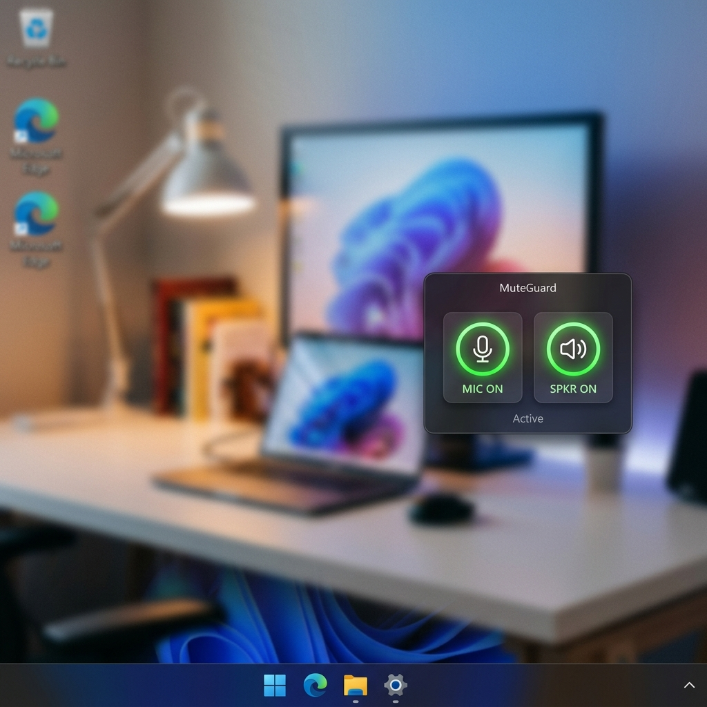
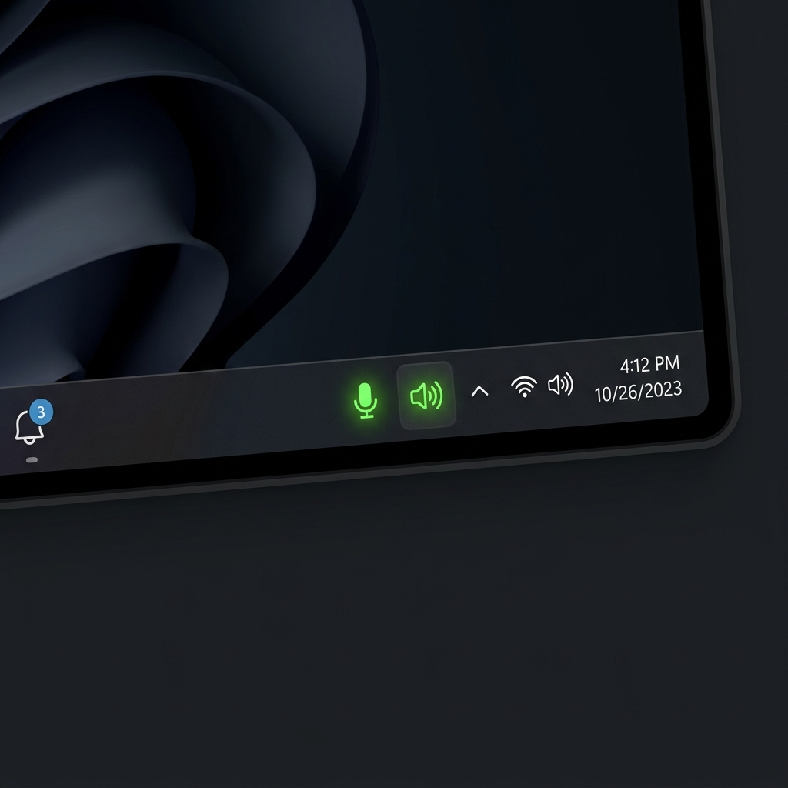

Dual Audio Control
Independently mute and unmute both your microphone and speaker/output device from a single app. One click is all it takes.
MuteGuard is a lightweight Windows 10/11 audio utility that puts instant mic and speaker mute toggles right at your fingertips — no more diving into system settings mid-call.
MuteGuard v4.0 packs 15+ features designed for real workflows — from quick mute to full customization.
Independently mute and unmute both your microphone and speaker/output device from a single app. One click is all it takes.
Toggle mic with Win + Alt + M and speaker with Win + Alt + S by default. Rebind to any key combo from the Settings panel.
Two dedicated tray icons — one for mic, one for speaker — always visible in your taskbar. Icons update in real time. Single-click mic tray to instantly toggle it.
An always-on-top, borderless mini widget sits anywhere on your screen. Draggable, scalable, toggleable — with its position saved automatically between sessions.
Automatically scans your system for all connected microphones and audio output devices. Switch between devices using simple dropdowns — no manual config needed.
The main control panel shows live mic and speaker status in bold, color-coded text — green for active, red for muted — so you always know your audio state at a glance.
Quick access from both tray icons — toggle, open control panel, open Windows Sound Settings, open Mic Privacy settings, and exit. All without opening the full app.
Pick any icon from any .dll or .ico file on your system for all four states — mic muted, mic active, speaker on, speaker off. Uses the native Windows icon picker dialog.
Switch between a clean Windows 11 light theme and a sleek dark mode. Icons automatically swap to match the selected theme for a perfectly cohesive look.
Enable MuteGuard to launch automatically with Windows — zero manual effort needed every time you boot. It's just there, ready for you.
Adjust mini window size with a slider (1–200% scale), toggle a visible border, choose mic or speaker icons or both, and enable DPI-aware scaling for HiDPI displays.
All your preferences — devices, shortcut keys, window position, theme, icon paths, startup — are saved to a local .ini file and restored automatically every session.
The default shortcuts are just starting points. Head into MuteGuard's Settings panel to assign any key combo you prefer — so it fits your natural workflow.
From the floating mini widget to the real-time tray icons — MuteGuard is built to feel native to Windows 11.

An always-on-top acrylic widget that sits anywhere on your desktop. Draggable with right-click, scalable from 1–200%, and toggled via tray or shortcut.

Two live tray icons update in real time to show your current mic and speaker state. Right-click either for quick-access menus — no need to open the main window.
Whether it's Zoom, Teams, Google Meet, or any voice call — MuteGuard gives you an instant, always-accessible mute button so accidental background noise never interrupts a meeting again.
Instead of right-clicking the taskbar, opening Sound settings, and navigating device panels, MuteGuard gives you everything in one click or one keypress.
The UI, theme system, and tray behavior are all designed to match the native Windows 11 look and feel — it doesn't feel like a third-party tool bolted on.
MuteGuard is lightweight and stays out of your way until you need it. No background processes hogging resources — it sips minimal CPU and RAM.
From shortcut keys to icons to window size to theme — MuteGuard adapts to your workflow, not the other way around. Every preference is saved and restored automatically.
If a device is temporarily unavailable, MuteGuard retries up to 3 times before surfacing a tray notification — preventing false mute states and phantom toggles.
No subscriptions. No account required. No ads. No data collection. MuteGuard is completely free to use — if you love it, you can optionally support development via GitHub Sponsors.
Fast, reliable audio control without interrupting what you're doing — whatever your use case.
Free, lightweight, and ready in seconds. Choose the Portable version to run anywhere, or the Installer for a full Windows-integrated setup — no sign-up required.
By downloading, you agree to the MIT License. No telemetry. No data collected. Your privacy is respected.
MuteGuard is developed in my spare time and offered completely free — no ads, no subscriptions, no paywalls. If it has saved you from even one awkward on-mute moment, consider buying me a coffee!
Every contribution — however small — directly funds new features, bug fixes, and continued Windows compatibility updates. You're supporting an indie developer who genuinely cares about your experience.
And if you can't donate, simply sharing MuteGuard with a friend or colleague means just as much. Thank you. ♥
Support active development and help shape what comes next — new features, improvements, and faster releases.
Powered by GitHub Sponsors — secure & transparent.